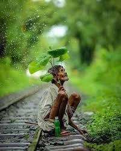
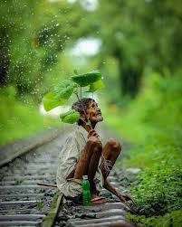

Nature photography is a wide range of photography taken outdoors and devoted to displaying natural elements such as landscapes, wildlife, plants, and close-ups of natural scenes and textures. Nature photography tends to put a stronger emphasis on the aesthetic value of the photo than other photography genres, such as photojournalism and documentary photography.
"Nature photography" overlaps the fields of -- and is sometimes considered an overarching category including -- "wildlife photography," "landscape photography," and "garden photography".
Nature photographs are published in scientific, travel and cultural magazines such as National Geographic Magazine, National Wildlife Magazine and Audubon Magazine or other more specific magazines such as Outdoor Photographer and Nature's Best Photography. Well known nature photographers include Ansel Adams, Eliot Porter, Frans Lanting, Galen Rowell, and Art Wolfe.


 

Nature photography usually feature a subject such as a plant, animal or flower. This means that you need to separate that subject from the background of the frame. You’ll need to judge the placement of the elements in the frame. And you’ll need to make a few adjustments. First, you’ll want some distance between your foreground and background.
A nature photographer uses photography equipment, like cameras and different lenses, to capture photographs of different types of nature scenes. Besides focusing on just nature scenes in general, many photographers will also specialize in photographing specific subjects in nature as well.
Some nature photographers, for instance, may only shoot a certain type of animal. Others, however, may only shoot animals in a particular region or setting, such as African animals or animals underwater.
A career in nature photography often requires skills that may not be needed in some other types of photography, like fashion photography. First of all, animals usually won’t cooperate well when it comes to posing. Nature photographers must be ready to get great pictures when the animals are. This often requires a great deal of patience, and obtaining one single quality shot can often take hours or even days.